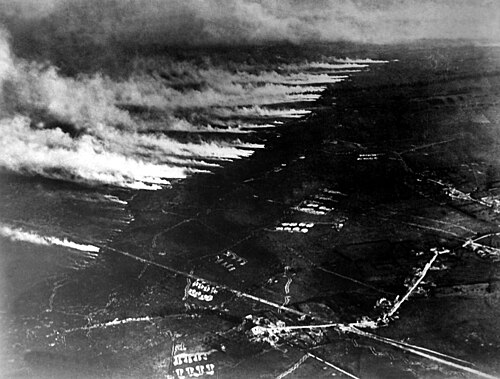

GCSE Exam Practice
Source A
A photograph taken by official war photographer Frank Hurley showing Australian soldiers walking along a duckboard track through the shattered landscape of Chateau Wood during the Battle of Passchendaele, 1917.

Source B
An aerial photograph showing clouds of poison gas rolling across the battlefield during a chemical attack on the Western Front.

Provenance Scaffolding:
Source A was taken by an official photographer known for dramatic compositions; does this limit its usefulness or perfectly capture the reality of the mud? Source B is an aerial photograph of a gas attack; what makes this detached, wide-angle view of the battlefield useful for understanding the scale of chemical warfare?
Q2. 1 (a). How useful are Sources A and B for an enquiry into the difficult conditions faced by the medical services at Passchendaele and Ypres? Explain your answer, using Sources A and B and your knowledge of the historical context.
[8 marks • 10 mins]